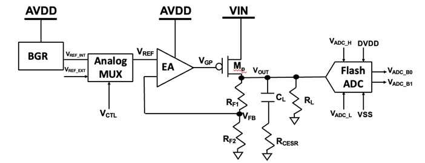

Selected Course Projects
Mar. 2026 - June 2026
CMOS Low-Dropout Regulator with Integrated Flash ADC
Semester Project, Analog Integrated Circuits Lab | NYCU
- Constructed a transistor-level power management and data conversion circuit comprising an LDO, a Bandgap Reference (BGR), and a Flash ADC.
- Built the error amplifier (two-stage OP) for output voltage regulation and the BGR for stable 1.2V reference voltage, supporting digital output logic and a 100 mA load current.
- Conducted rigorous pre- and post-layout simulations to verify loop stability, transient performance, and line/load regulation. Completed DRC, LVS and PEX using TSMC 180nm PDK.

System block diagram of the CMOS Low-Dropout Regulator integrated with BGR, Analog MUX, and Flash ADC
Dec. 2025
Two-Stage Op-Amp Design with Cascode Input Stage
Final Project, Introduction to Analog Integrated Circuits | NYCU
- Simulated a two-stage Op-Amp project utilizing a cascode differential input stage to achieve an exceptional DC gain of 106.3 dB.
- Implemented Miller compensation to ensure frequency stability, maintaining a 60.5 MHz unity-gain frequency and a 56.3° phase margin.
- Achieved superior noise rejection with a CMRR of 120.1 dB and PSRR of 109.6 dB.
Oct. 2025 - Dec. 2025
High-Performance 6-Bit ALU
Semester Project, Introduction to VLSI Design | NYCU
- Designed a 6-bit ALU supporting arithmetic and logic operations, performing full-custom design flow with pre- and post-layout verification in HSPICE and Cadence Virtuoso.
- Achieved a 4.46 ns cycle time (1.6 ns period) and a compact layout area of 2,267.7 μm2, verified through rigorous post-layout simulation.